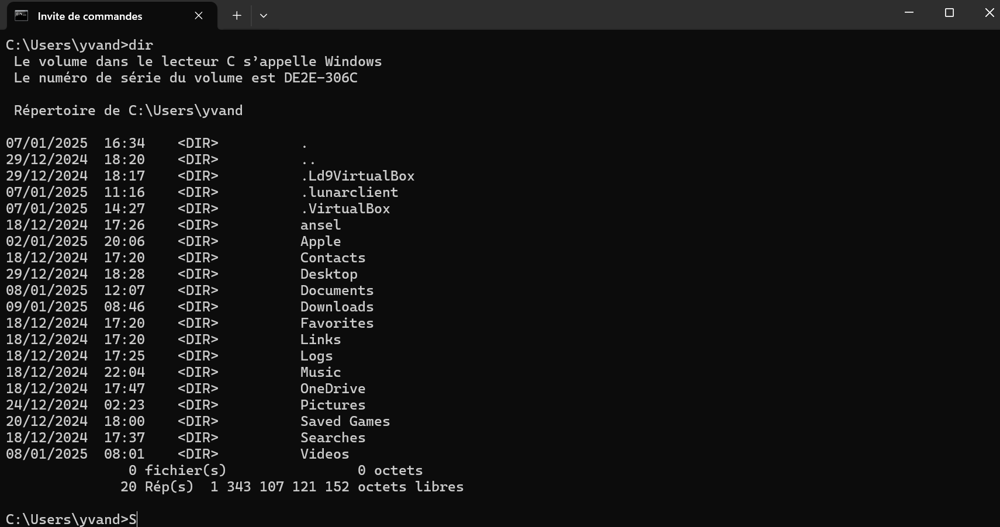
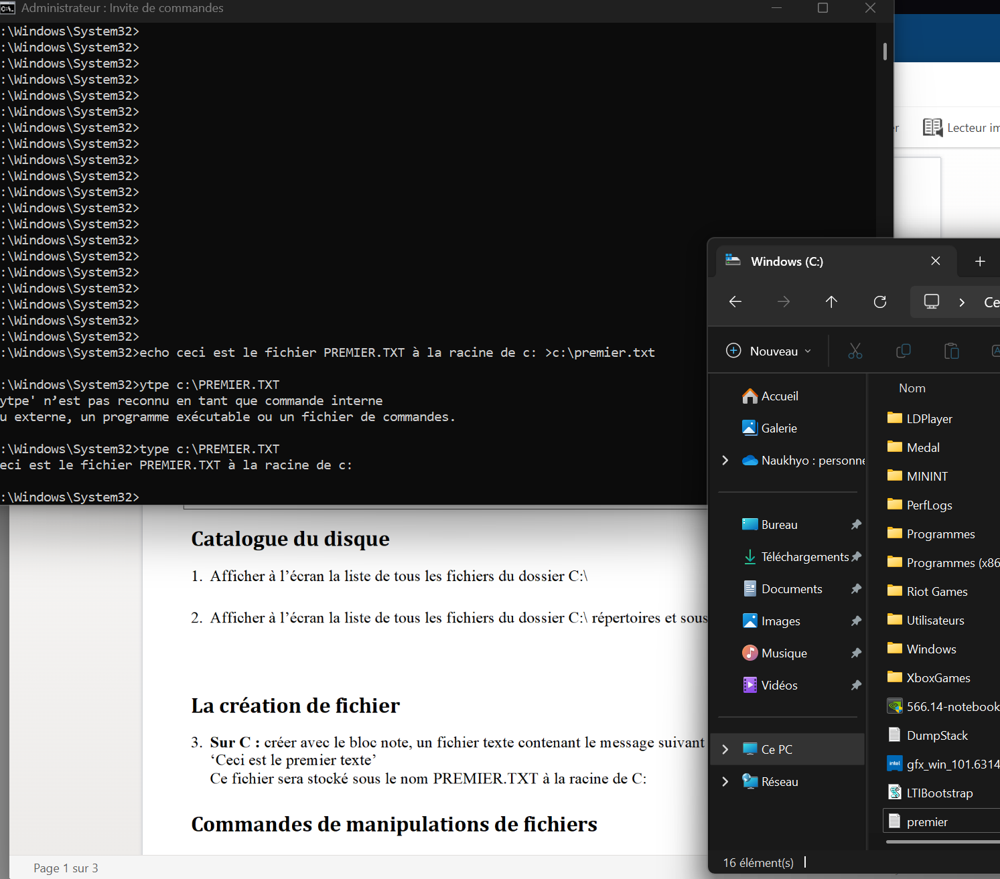
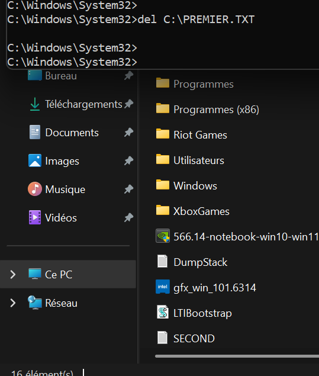
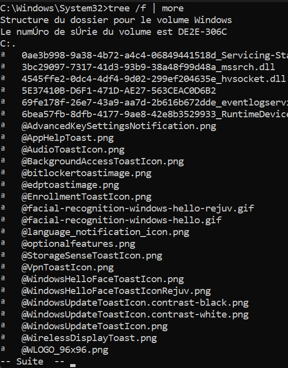
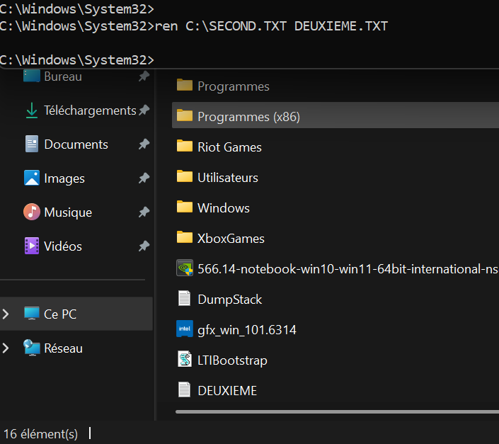
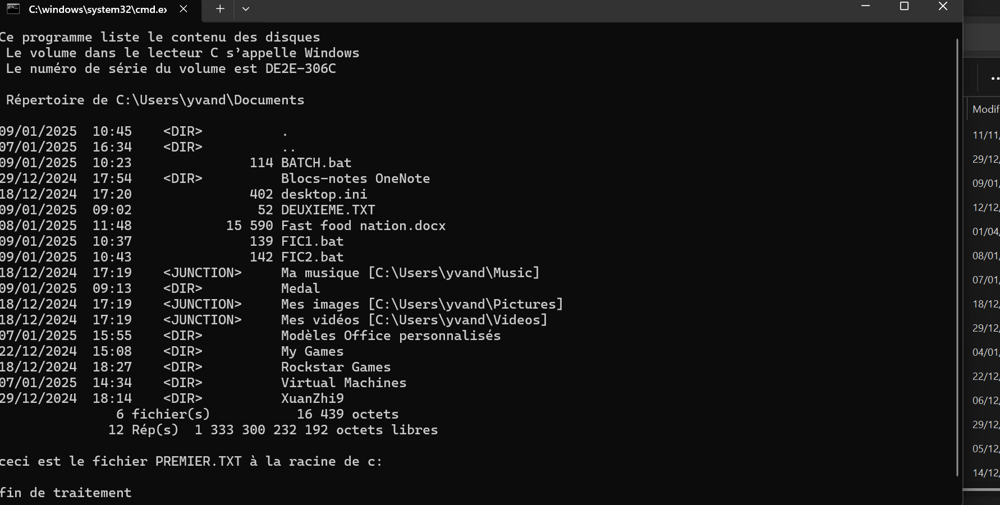
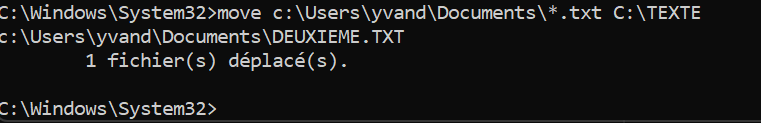

Pourquoi utiliser CMD ?
L'invite de commandes (CMD) permet de faire des opérations sur le système sans passer par l'interface graphique. C'est utile pour automatiser des tâches, parcourir des répertoires, gérer des fichiers ou diagnostiquer des problèmes réseau.
| Commande | Rôle | Exemple |
|---|---|---|
dir | Lister le contenu d'un dossier | dir C:\TEXTE |
cd | Changer de répertoire | cd C:\Users\yvan |
mkdir | Créer un dossier | mkdir C:\TEXTE |
del | Supprimer un fichier | del fichier.txt |
copy | Copier un fichier | copy fic1.txt C:\BATCH |
move | Déplacer un fichier | move fic1.txt C:\TEXTE |
attrib | Modifier les attributs d'un fichier | attrib +r fichier.txt |
subst | Créer un lecteur virtuel | subst X: C:\dossier |
prompt | Personnaliser l'invite | prompt $D $T$_$L$P$G |
Naviguer et lister des fichiers
La commande dir affiche le contenu d'un répertoire avec les noms, tailles et dates. Avec dir /a on voit aussi les fichiers cachés, et dir /s parcourt les sous-dossiers.

Scripts batch
Un fichier batch (.bat) permet d'enchaîner des commandes automatiquement. On peut créer des dossiers, copier des fichiers, afficher des messages, tout ça d'un seul double-clic. Utile pour automatiser des tâches répétitives en administration.



Attributs de fichiers
La commande attrib permet de modifier les attributs d'un fichier : lecture seule (+r/-r), caché (+h/-h), archive (+a/-a), système (+s/-s). Pratique pour protéger des fichiers ou les cacher à l'explorateur.

Personnaliser l'invite et lecteurs virtuels
La commande prompt change l'affichage de l'invite. Par exemple prompt $D $T affiche la date et l'heure. La commande subst crée un lecteur virtuel à partir d'un dossier, ce qui peut simplifier l'accès à des chemins longs.


subst ne persistent pas au redémarrage. Pour les rendre permanents, il faut les ajouter dans un script de démarrage.